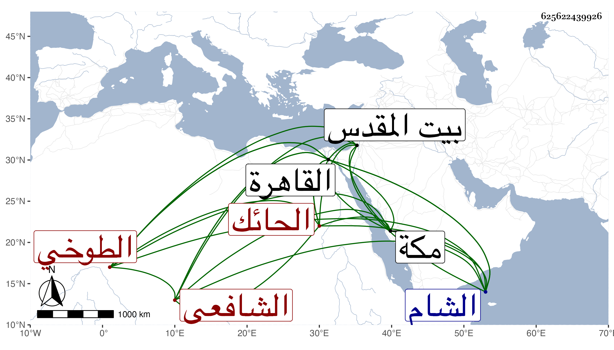

0902Sakhawi.DawLamic.ITO20230111-ara1.EIS1600.625622439926
Biography ID: 625622439926
130
محمد بن أحمد بن محمد بن صديق الشمس الطوخي الشافعي الحائك . ولد في سنة ثمان وعشرين وثمانمائة تقريبا بطوخ . ونشأ بها فحفظ القرآن والحاوي ومختصر التبريزي وألفية الحديث والنحو ، وعرض على جماعة كالشهاب بن رسلان وماهر وعبد الكريم القلقشندي ببيت المقدس ولقي بالشام البلاطنسي واشتغل يسيرا بالقاهرة على ابن المجدي والخواص في الفرائض والفقه وغيرهما ، وتلا بمكة لأبي عمرو علي ابن عياش . وسمع هناك على أبي شعر وبالقاهرة على شيخنا ومعنا غالب الصحيح على البرهان الصالحي وختمه على جماعة ، ثم أعرض عن ذلك وأقام ببلده متكسبا بالحياكة . وقدم القاهرة في سنة تسع وسبعين ومعه ولد له حفظ الحاوي والورقات فعرض علي في جملة الجماعة وسمعا علي يسيرا ولم يلبث أن فجع به في طاعون سنة إحدى وثمانين .
